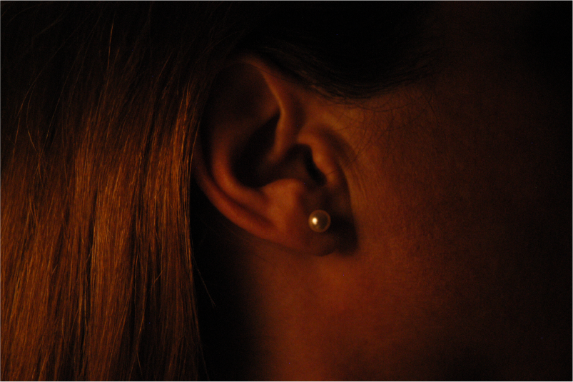
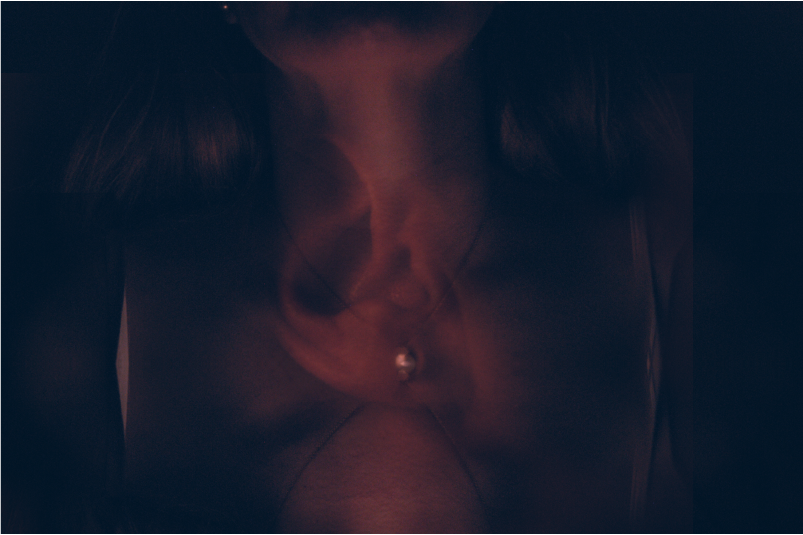
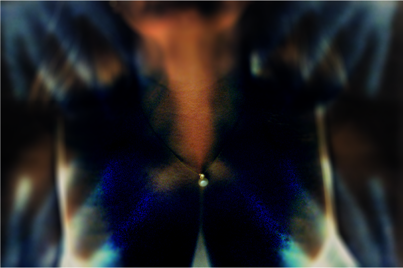

Adobe Photoshop

The Project (2022)
In my project "Self," I sought to explore the human body through the lens of photography, using abstraction and symbolism to express the complexity of identity. After capturing a series of initial photographs, I immersed myself in the editing process using Adobe Photoshop, experimenting with superimposition and other techniques to layer textures and shapes onto the human form. Through numerous iterations, I arrived at two final images that shared a powerful unifying element: a pearl. This symbol became the focal point of my composition, embodying purity and strength, while also serving as a bridge between the two distinct visual approaches.

The final composition, titled "The Pearl," reflects a duality of expression within the human experience. While one image embraces a warmer, subtler palette, evoking a sense of introspection and quiet resilience, the second photograph shifts into cooler tones, with vivid contrasts that suggest a more intense, outward force of transformation. Despite their differences in color and mood, both images are unified by the presence of the pearl, which hangs at the center like a metaphor for selfhood. In this context, the pearl symbolizes both fragility and endurance, capturing the tension between vulnerability and inner strength. These works were featured in a virtual exhibition during the COVID-19 pandemic, offering an intimate reflection on the self in a time of isolation.

